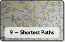

⬑ Liste aller flipped lectures. — Algorithmen und Datenstrukturen
Lektion 9: Graphen – Kürzeste Wege

Diese Lektion behandelt den vielleicht wichtigsten Graph-Algorithmus: Dijkstras Kürzeste-Wege-Algorithmus.
In vielen Anwendungen bestehen nicht nur qualitative Beziehungen zwischen Paaren von Objekten, sondern ihre Wichtigkeit ist (relativ) quantifizierbar. Solche Situationen modelliert man als (Kanten-)gewichtete (Di)Graphen.
In einem gewichteten (Di)Graph lassen sich kürzeste Wege (bezüglich der Summe der Kantengewichte) nicht mehr einfach mit Breitensuche finden. Es gibt aber dennoch effiziente Verfahren für dieses Problem; das wichtigste davon besprechen wir in dieser Lektion.
Lernziele
- Modellierung durch kürzeste Wege in gewichtete Graphen verstehen
- Dijkstras Algorithmus und seine Eigenschaften und Einschränkungen kennen
Fragensammlung für die Q&A Session
Tragt hier Fragen ein, die während der Vorbereitung aufkamen, und die ihr gerne klären möchtet. Bewertet außerdem die existierenden Fragen.
Hausordnung
- Es ist explizit erlaubt/erwünscht, Fragen aus den Aufgaben zur Vorbereitung unter den Videos zu übernehmen, wenn ihr diese der Q&A Session besprechen wollt.
- Auch wenn ihr gerade keine eigene Frage stellen möchtet,
sind die Fragen der anderen oft hilfreiche Denkanstöße auch für euch.
Deshalb, und um Fragen für die Q&A Sessions zu priorisieren,
könnt ihr Fragen bewerten.
Tragt dazu bei einer Frage entweder ein (zusätzliches) »+« ein, wenn ihr diese Frage interessant findet, oder ein (zusätzliches) »-«, wenn ihr sie nicht hilfreich findet (z.B. weil die Antwort direkt im Video gegeben wird). Listet zur besseren Übersicht zuerst alle »+«, dann alle »-«, jeweils in 5er Gruppen. - Bevor ihr eine neue Frage eintragt, schaut ob eine existierende Frage eurer sehr nahe kommt; wenn ja, schreibt eure Frage als alternative Formulierung zu dieser Frage dazu.
- Wenn ihr der Meinung seid, ihr könnt eine Frage in wenigen Worten beantworten, so ergänzt eure Antwort unterhalb der Frage. Auch diese Antworten könnt ihr bewerten, wenn ihr sie hilfreich findet, oder Erwiderungen ergänzen, wenn ihr sie für falsch haltet.
- Seid konstruktiv.
Material
Die Videos entstammen dem Coursera MOOC Algorithms Part II von Robert Sedgewick und Kevin Wayne.
1 – Shortest Paths
In diesem Video formalisiert Sedgewick das Kürzeste-Wege-Problem in gewichteten Digraphen und listet zahlreiche Anwendungen auf. Anschließend werden die verschiedenen Varianten des Kürzeste-Wege Problems dargestellt. Wir werden in A&DS aber nur eine Variante behandeln, nämlich das single-source shortest-oath problem in Digraphen mit positiven Kantengewichten.
Anschließend stellt Sedgewick noch die erweiterte Digraph API EdgeWeightedDigraph vor, die wir in dieser Lektion verwenden, und beschreibt die API SP für Single-Source Shortest-Path Algorithmen.
Aufgaben zur Vorbereitung:
- Welche Varianten des Kürzeste-Wege-Problems werden vorgestellt?
- Wie unterscheidet sich die EdgeWeightedDigraph API von der Digraph API aus Lektion 8?
- Ist es eine besorgniserregende Einschränken, dass Sedgewick hier stets gerichtete Graphen annimmt? Was tut man, wenn man kürzeste Wege in einem gewichteten, aber ungerichteten Graphen bestimmen möchte?
2 – Shortest Path Properties
In diesem Video stellt Sedgewick einen generischen Meta-Algorithmus für single-source shortest paths vor (das wiederholte Relaxieren von Kanten) und beweist seine Korrektheit.
Achtung: Dieses Video ist das abstrakteste und Mathematik-lastigste im ganzen Graphen-Abschnitt von A&DS. Die Vorarbeit in diesem Video erlaubt es dafür aber, die Korrektheit von Dijkstras Algorithmus in Video 4 extrem elegant auf den Meta-Algorithmus zurückzuführen.
Aufgaben zur Vorbereitung:
- Was ist der Kürzeste-Wege-Baum (shortest-path tree, SPT) in einem Graphen bezüglich eines Startknotens s? Warum ergibt die Vereinigung der kürzesten Wege von s zu allen anderen Knoten stets einen Baum?
- Welcher Zusammenhang besteht zwischen dem Array edgeTo und dem SPT?
- Was tut die Operation relax(e), die Relaxierung einer Kante e = v→w? Was genau speichert dabei distTo[v]?
- Was sind die Optimalitätsbedingungen (für distTo und edgeTo), die Sedgewick formuliert?
- Wie funktioniert der generische Meta-Algorithmus für single-source shortest paths? Welchen Interpretationsspielraum lässt diese allgemeine Formulierung?
3 – Indexed Priority Queues
Wichtig: Wir verwenden von diesem Video nur den Teil von Minute 27 bis 31. (Der Rest des Videos behandelt Prims Algorithmus für minimale Spannbäume und ist nicht Thema von A&DS.)
In diesem Video wird eine Erweiterung der Priority Queue API, die IndexMinPQ API, vorgestellt und skizziert, wie man diese auf Basis der binary-heap Implementierung von MinPQ umsetzen kann. Die Erweiterung erlaubt es, die Priorität (den Key) eines schon in der Queue befindlichen Objektes zu verändern. Von dieser Möglichkeit macht Dijkstras Algorithmus (Video 4) Gebrauch.
Es empfiehlt sich für dieses Video, die Details aus Lektion 5, Teil 4 zu Priority Queues und binary heaps nochmal aufzufrischen.
Aufgaben zur Vorbereitung:
- Welche Operation ist die wesentliche Änderung zu MinPQ?
- Warum kann man nicht einfach den Key eines Objektes, das irgendwann zuvor in die PQ eingefügt wurde, verändern? Was genau ginge dabei schief?
- Warum verwendet Sedgewick zum Ändern des Keys einen Index? Was vermeidet man dadurch (im Gegensatz dazu, einfach den alten und den neuen Key zu übergeben)?
4 – Dijkstra's Algorithm
In diesem Video stellt Sedgewick schließlich Dijkstras Algorithmus vor: Idee, detaillierter Code, Korrektheitsbegründung und Laufzeitanalyse.
Aufgaben zur Vorbereitung:
- Sedgewick formuliert Dijkstras Algorithmus als spezielle Variante des generischen Kürzeste-Wege-Algorithmus aus Video 2; wie wird hier bestimmt, welche Kante(n) als nächstes relaxiert werden?
- Welche Einschränkung bzgl. des Eingabe-Graph benötigt Dijkstras Algorithmus?
- Wie argumentiert Sedgewick, dass Dijkstras Algorithmus die Optimalitätsbedingungen erfüllt?
- Wie arbeitet Dijkstras Algorithmus? Wie setzt er priority queues ein?
- Welche Laufzeit (order of growth) hat Dijkstra mit binary-heap PQ?